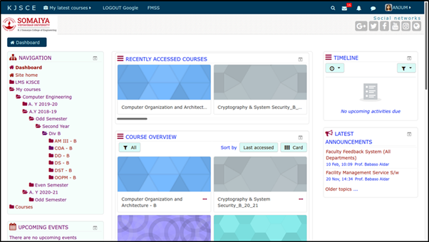

Analyzing an existing learning-management-system website and redesigning it to a mobile application
As a part of my Human Machine Interaction course in the 7th semester of Computer Engineering, we were given a project of analyzing an existing mobile/ web application and redesigning it using a prototyping tool. We selected our college Learning Management System (LMS) Website for this and decided to design a mobile app for the system by improving on the current pain points. For prototyping, we chose the Figma Prototyping tool. The different concepts and principles learnt in the course helped us identify the flaws in the current system and recommend better practices for designing the LMS.
Team Members: Anjum Khandeshi, Fatema Motiwala (myself), Vatsal Palan
The role of analyzing the design of the existing application and working on its redesign to a mobile app was shared between the 3 of us. After settling on the basic redesign structure, we worked by distributing the pages of the website amongst us, and individually working on each page. After the individual work, we would discuss, learn from the other's analysis, and reconcile selecting the best approach for our new redesigned app.
Till our 3rd semester of engineering, we used the Google Classroom for submission of our assignments, quizzes, notifications from teachers, etc. However, in our 4th semester, the college moved the entire management to an in-house LMS. Learning a new system can be a challenge in itself but when the system is not intuitive or easier than the previous system, it can cause a reluctance from the users. This caused chaos as the new system created a lot of problems for the students as well as the teachers, resulting in frequent loss of time and effort. Being a user of the new LMS for about 2 years as well as observing the interactions of my classmates with the system, inspired me to choose this application for the redesign project.
Moreover, the LMS website was not accessible via the mobile browser, hence we identified the need of a mobile app for the system.
The analysis and redesign of the LMS website was done for different pages in parts based on the different concepts taught during the HMI course. Out of these different concepts and aspects considered, I have mentioned 3 of those in detail here.
Heuristic evaluation is a process where experts use rules of thumb to measure the usability of user interfaces in independent walkthroughs and report issues. Evaluators use established heuristics (e.g., Nielsen-Molich’s) and reveal insights that can help design teams enhance product usability from early in development. I targeted the following 4 heuristic principles for good design on the Course Details Page:
1. CONSISTENCY and 2. CLEAN FUNCTIONAL DESIGN
Problem: Both pages, the documents although having similar categories are displayed with different headings. In page 1, all the uploads, submissions, tests are grouped together which can be very confusing for the user. In page 2, the uploads, submissions, appear in proper headings, however when compared to other course pages on the website, these headings are not consistent. This makes it difficult for the user to easily find what he/she is looking for. Both the pages do not look consistent. Moreover, the main course page is a long list of all the information all put together and hence, it can be a little frustrating for the user to scroll and find.
Solution: Proper categories are well defined and categorized. Also these categories are consistent throughout all course pages. So the user knows exactly where to find what he/ she is looking for and there is no confusion. All the teachers also know exactly where to post and the headings remain consistent. Here, information is structured and grouped and the page does not get very crowded. The design looks clean and functions to be performed are minimum and sufficient.
2. FREEDOM AND FLEXIBILITY
Problem: On clicking any upload, the new page opens up with a blank screen preview of no use and it automatically gets downloaded without any intimation that a file will be downloaded on clicking. Also, whenever the new page reloads, a file is downloaded. There is no freedom given to user to make the decision to download. The user has to download to view the file so there is no flexibility provided.
Solution: Every upload has a corresponding download button to provide the freedom to the user if he/she wants to download the file. Before downloading, if the user wants to preview the file, that flexibility is also provided in this design by clicking on the name and opening a file preview page.
4. SHOW STATUS
Problem: In the above problem, on downloading a file, the site doesn’t show any status on its page whether the file is downloading or has been downloaded. This can be confusing to the user and may result in the user clicking the file more than once.
Solution: Proper status for the file is being downloaded and once it has been downloaded is provided to the user.
Following aspects were considered while analyzing Color for the peer website.
1. Number of Colors
If you are using colors to organize the screen, then it is better to limit their number: too many colors can be confusing and unpleasant to look at.
On the home page of lms, you will already be bombarded with multiple colors including: blue, white, red, grey, light blue, green, and light green. Sometimes the text is blue, maroon, purple and black.
2. Color Perception
The color combination is acceptable for most users with impaired color vision
The most common color blindness is red-blue blindness. The main colors of the website are unfortunately red (maroon) and blue as shown in the picture above on the left. Also, in the image on the right, restricted is shown in blue and accessible is shown in red, which is impossible for a colour blind person to distinguish.
3. Intrinsic brightness and color for emphasis
The brightness of mixed colors depends upon the brightness of each color in the mixture and the relative quantities of each. For legible text, there needs to be sufficient contrast between the brightness of the background and foreground colors. For example, white text on a yellow background would be difficult to read as compared to white on black
On the home page itself we see that the website uses blue text on white background which is quite harsh on the eyes and hard to read for too long.
4. Color for grouping
Color can be used to organize the screen. Areas of the screen containing different types of information may have a different background color. The buttons are grouped together according to function: the buttons with blue text are numbers, the buttons with red control the memory, and so on.
The website does not follow consistent colors for grouping rather very random color schemes have been chosen. In the navbar, the mail uses black icons and text (pic 1) while the notifications uses blue text and random color icons (pic 2) having no consistency. Also the color in the sidebar randomly changes from red to purple (pic3).
COLOR IN REDESIGNED SOLUTION
Delivering a good user experience requires that first, you find out the functionalities that will answer their needs; second, you need to guide them to the specific functions they need most. Hick’s Law is a simple idea that says that the more choices you present your users with, the longer it will take them to reach a decision. It’s common sense but often neglected in the rush to cram too much functionality into a site or application. Users bombarded with choices have to take time to interpret and decide, giving them work they don’t want.
We need to use Hicks law when response time is critical which is extremely true in the case of LMS. LMS is accessed by students in situations such as: Submisssions of work, Online quiz, Downloading resources before examinations, Making payments, Submitting applications and concessions, Getting information about faculty, etc.
Most of this is time-sensitive and might be carried out in environments where students might be distracted and might miss their train of thought and motive altogether. Below is our analysis of Hick's Law on existing application and providing possible improvements in the redesign.
1. Home Page/ Dashboard
Problem: The home page for LMS is very cluttered. To be able to access a course that is not recently accessed, the user requires many steps. As a new user, this page is very very overwhelming. When LMS was first introduced most of us had to ask each other for help on how to navigate this website. 
Solution: Here, all the cards show only the currently enrolled courses and there is a simple help button, which helps create a Lower learning curve.
2. Sidebar navigation and breadcrumbs
Problem: Categorizing Choice - You can see Hick’s Law in action in the navigation of almost any website. If your menus offered direct access to every link within your site, you could quickly overwhelm the visitor.
The choices to reach the main functionality should be lower. Reaching current courses in LMS requires various clicks and opening of hierarchies. Within the hierarchy, it shows older courses from past semesters on top, even though those are courses that students will rarely access.
Solution:
Here, the current and older courses are separated and have a very different access strategy. The current courses which are more likely to be accessed, are shown on top requiring lesser clicks.
3. Submission Screen
Problem: One of the most time-sensitive pages is the submission page as there have been many instances where students have made their submissions at the last minute. Requires many clicks to reach the submission upload area. Also many times the option to add and format text is available which makes this process even more difficult.
Solution: Uploading your work and submitting here is a simple one-click process.
Combining all the pages that we analyzed for our project, we also linked them using logical flow control and transitions. Below are all the pages for our prototype. You can see our canvas on this link
To see and test the flow of our redesigned mobile app, check out this link